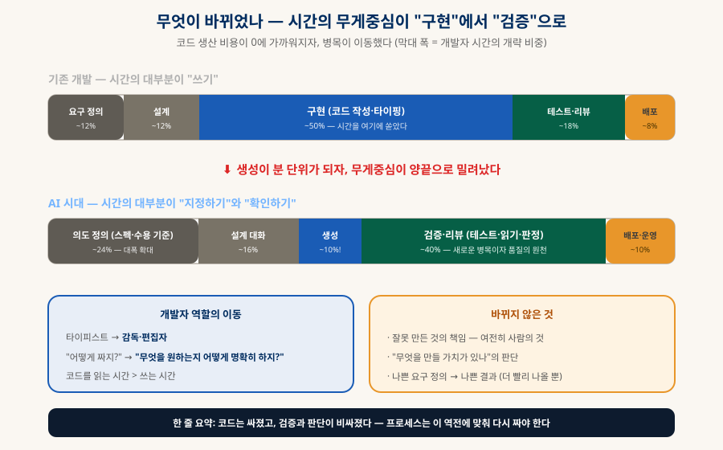
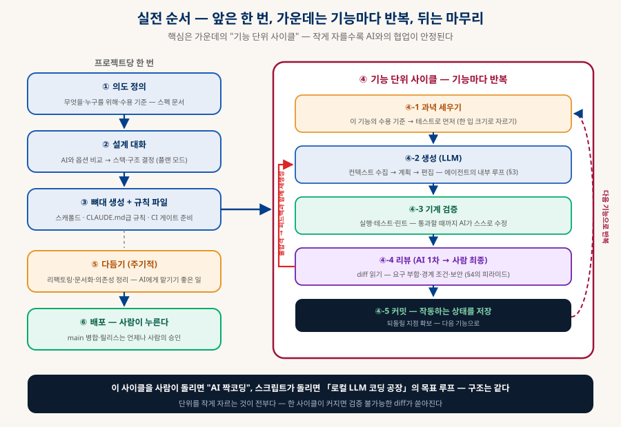
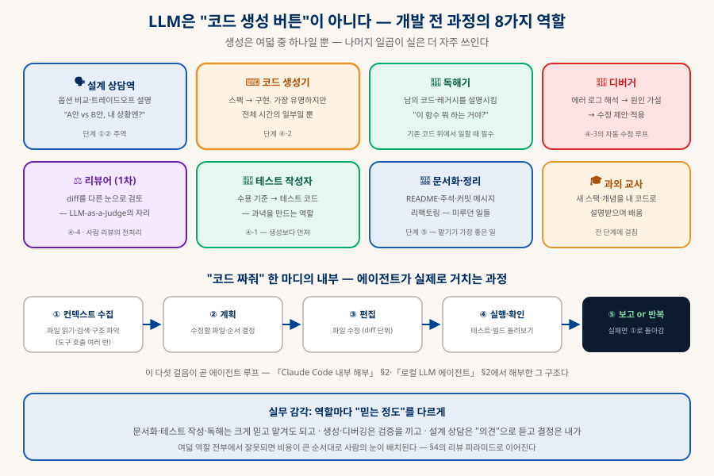
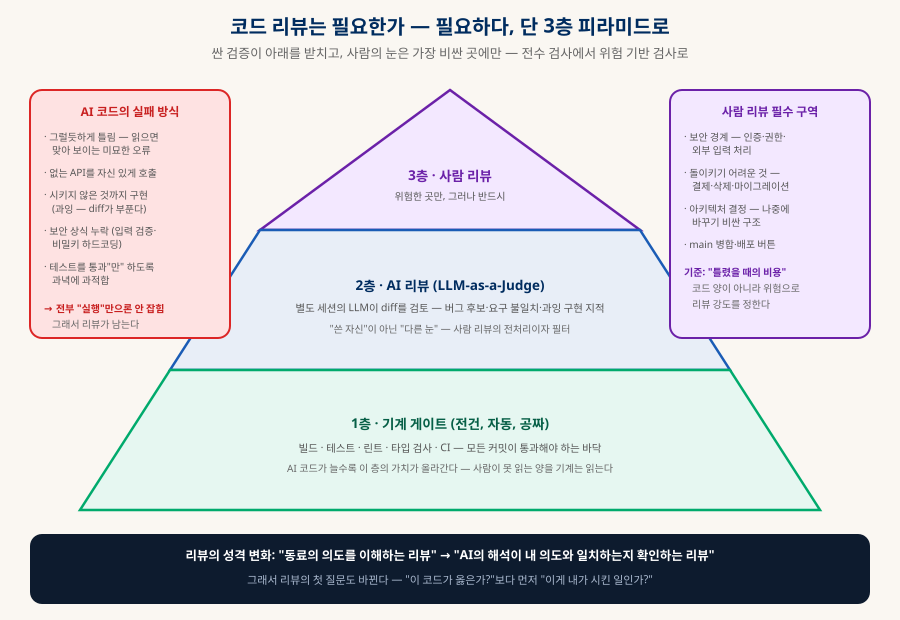
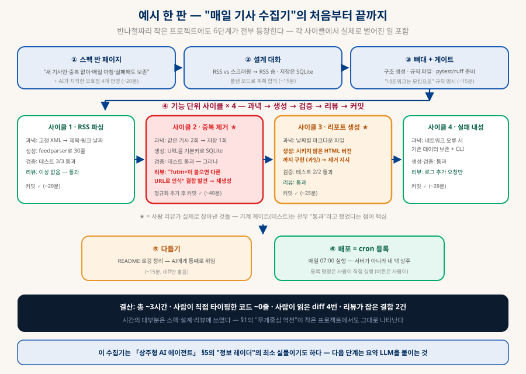

AI 시대의 개발 프로세스
코드는 싸졌고 검증이 비싸졌다 — 순서·역할·리뷰의 재설계
LLM으로 코딩과 앱 개발을 할 때 실제로 어떤 순서로 움직여야 하는지, 그 안에서 LLM이 어떤 역할들을 맡고 내부적으로 무슨 과정을 거치는지, 그리고 코드 리뷰는 여전히 필요한지 — 바이브 코딩 시대의 작업 흐름을 처음부터 끝까지 정리한다. 이 저장소의 하네스·루프·심판 문서들이 "시스템"이라면, 이 문서는 "사람의 작업 순서"다.
0. 한눈에 보기 — 결론 네 가지
이 문서 전체가 이 네 문장의 전개다
구현 → 의도 정의·검증 (§1)
가운데는 기능마다 반복 (§2)
전 과정의 참여자 (§3)
피라미드로 재편 (§4)
한 문단 요약: AI 시대의 개발은 "코드를 쓰는 일"에서 "원하는 것을 명확히 지정하고, 나온 것을 검증하는 일"로 무게중심이 옮겨간 활동이다. 그래서 프로세스의 앞(의도 정의)과 뒤(검증·리뷰)가 두꺼워지고 가운데(구현)가 얇아지며, 개발자의 역할은 타이피스트에서 감독·편집자로 이동한다. 코드 리뷰는 사라지기는커녕 더 중요해지는데 — 다만 전수 검사가 아니라 기계→AI→사람의 3층 피라미드로 재편된다. 이하 각 절이 이 문장들을 하나씩 편다.
1. 무엇이 바뀌었나 — 병목의 이동
생성이 분 단위가 되는 순간, 프로세스의 모든 비율이 다시 계산된다
기존 개발에서 가장 큰 시간 덩어리는 구현(타이핑)이었다. LLM이 그 비용을 분 단위로 떨어뜨리자 이상한 일이 생긴다 — 더 빨라졌는데 더 바쁘다. 코드가 쏟아지는 속도만큼 "이게 내가 원한 게 맞나"를 확인하는 일이 쌓이기 때문이다. 병목은 사라진 게 아니라 이동했다: 앞으로는 의도 정의(무엇을 원하는지 명확히), 뒤로는 검증·리뷰(나온 것이 맞는지).

2. 실전 순서 — 6단계, 가운데는 반복
앞(①~③)은 프로젝트당 한 번, ④는 기능마다, ⑤~⑥은 마무리

| 단계 | 하는 일 | 요령 |
|---|---|---|
| ① 의도 정의 | 무엇을·누구를 위해·"완성"의 기준을 문서로 | AI와의 대화로 다듬으면 좋다 — "내 요구에서 모호한 곳을 지적해줘"가 최고의 첫 프롬프트 |
| ② 설계 대화 | 스택·구조를 AI와 옵션 비교로 결정 | 코드 생성 전에 계획만 시키는 모드(플랜 모드)를 쓸 것. 결정은 내가 — AI의 첫 제안은 "무난한 평균"일 뿐(「기술 스택 고르기」 §1의 저울로 검증) |
| ③ 뼈대 + 규칙 | 스캐폴드 생성, 프로젝트 규칙 파일(CLAUDE.md류), 테스트·린트 게이트 준비 | 규칙 파일에 스타일·금지사항을 굳히면 이후 모든 생성의 품질이 오른다 — 하네스 엔지니어링(「클로드 확장하기」 §8)의 시작점 |
| ④ 기능 단위 사이클 | 과녁(테스트) → 생성 → 기계 검증 → 리뷰 → 커밋 | 한 입 크기로 자르기 — 아래 콜아웃 참조. 이 문서의 심장 |
| ⑤ 다듬기 | 리팩토링·문서화·의존성 정리 (주기적) | AI에게 맡기기 가장 좋은 일들 — 테스트가 있으면 리팩토링이 안전해진다 |
| ⑥ 배포 | main 병합·릴리스 | 버튼은 언제나 사람이 누른다 — 자동화하더라도 승인 게이트는 남긴다 |
3. LLM의 역할과 내부 과정
"코드 생성 버튼"으로만 쓰면 가치의 대부분을 버리는 셈이다

내부에서 벌어지는 일. "이 기능 만들어줘" 한 마디에 에이전트는 다섯 걸음을 밟는다 — ① 컨텍스트 수집: 관련 파일을 읽고 검색해 코드베이스의 현재 상태를 파악(도구 호출 여러 번) → ② 계획: 수정할 파일과 순서 결정 → ③ 편집: diff 단위 수정 → ④ 실행·확인: 테스트·빌드를 직접 돌려봄 → ⑤ 실패면 결과를 들고 ①로 되돌아가 반복. 이것이 「Claude Code 내부 해부」 §2와 「로컬 LLM 에이전트」 §2에서 해부한 에이전트 루프이고, 챗봇에 코드 조각을 물어보는 것과 에이전트에게 기능을 맡기는 것의 차이가 바로 이 루프의 유무다.
역할마다 믿는 정도를 다르게 — 문서화·테스트 작성·코드 독해는 크게 믿고 맡겨도 되는 영역이고, 생성·디버깅은 검증을 끼고 쓰는 영역이며, 설계 상담은 "의견"으로 듣되 결정은 내가 하는 영역이다. 기준은 하나 — 틀렸을 때의 비용. 이 감각이 §4의 리뷰 피라미드로 그대로 이어진다.
4. 코드 리뷰는 필요한가 — 필요하다, 성격이 바뀔 뿐
리뷰의 첫 질문이 바뀐다: "이 코드가 옳은가?"보다 먼저 "이게 내가 시킨 일인가?"
짧은 답: 필요하다 — 오히려 더. AI 코드는 사람 초보의 코드와 다르게 실패한다: 문법은 완벽하고 스타일은 그럴듯한데 미묘하게 틀린다. 읽으면 맞아 보이는 논리 오류, 자신 있게 호출하는 존재하지 않는 API, 시키지 않은 것까지 구현하는 과잉, 입력 검증·비밀키 처리 같은 보안 상식의 누락, 그리고 테스트를 "통과만" 하도록 과녁에 과적합하는 것 — 전부 실행만으로는 안 잡히고 읽어야 잡히는 유형들이다. 그래서 리뷰는 남는다. 다만 사람이 모든 diff를 전수 검사하는 건 물량상 불가능해졌으므로, 구조가 3층 피라미드로 재편된다:

| 층 | 무엇을 잡나 | 비용·적용 |
|---|---|---|
| 1층 · 기계 게이트 | 빌드 실패, 테스트 회귀, 린트·타입 오류 | 공짜·자동·전건 — AI 코드가 늘수록 가치가 커진다. CI로 강제 |
| 2층 · AI 리뷰 | 버그 후보, 요구 불일치, 과잉 구현, 스타일 | 싸고 빠름 — 작성한 세션과 다른 눈이 핵심(「LLM-as-a-Judge」의 자기 편애 회피). 사람 리뷰의 전처리 |
| 3층 · 사람 리뷰 | 의도 일치, 보안 경계, 아키텍처 방향 | 비쌈 — 위험 기반으로만: 인증·결제·삭제·마이그레이션·main 병합은 필수, 유틸 함수는 1~2층으로 충분 |
5. 규모별 강도 조절 — 전부 풀장착일 필요는 없다
바이브 코딩 ↔ 엄격 게이트는 스위치가 아니라 다이얼이다
| 규모 | 프로세스 강도 | 이유 |
|---|---|---|
| 주말 실험·프로토타입 | ①② 가볍게, ④에서 테스트 생략 가능, 리뷰는 훑기만 | 버릴 코드에 게이트를 세우는 건 낭비 — 속도가 전부. 단 "이게 실서비스가 되는 순간" 아래 줄로 승격할 것 |
| 개인 프로젝트·소규모 서비스 | 6단계 전부, 리뷰는 1~2층 중심 + 위험 구역만 3층 | 이 문서의 기본 눈금 — 혼자서도 유지 가능한 최소 완비 |
| 팀·프로덕션 | 전 게이트 CI 강제 + PR 사람 리뷰 필수 + AI 리뷰는 보조 | 코드는 여럿의 계약 — "AI가 짰다"는 책임의 면제 사유가 아니다 |
| 무인 자율 루프 | 「로컬 LLM 코딩 공장」의 풀장착 — 격리·상한·심판 | 사람이 사이클에서 빠지는 만큼 게이트가 사람 몫까지 한다 |
6. 사람의 역할 — 무엇이 남고, 무엇이 새로 생기나
사라진 것은 타이핑이지 엔지니어링이 아니다
🎯 남는 것 ① 문제 정의
"무엇을 만들 가치가 있고, 완성이 무엇인지"는 AI가 대신 정할 수 없다 — §1의 역전으로 오히려 가장 커진 기술.
⚖️ 남는 것 ② 판단과 책임
설계 선택, 위험 구역 승인, 배포 버튼. 틀렸을 때 책임지는 자가 결정한다 — 이건 도구가 바뀌어도 안 바뀐다.
🔍 남는 것 ③ 검증 설계
"맞았는지 어떻게 아는가"를 설계하는 능력 — 테스트·게이트·리뷰 피라미드를 세우는 일이 곧 품질이다.
✍️ 새 기술 ① 스펙 쓰기
모호함 없는 요구·수용 기준 작성 — 프롬프트 엔지니어링의 실체는 문장 기교가 아니라 이것이다.
🧰 새 기술 ② 하네스 다루기
규칙 파일·도구·컨텍스트를 조율해 AI의 작업 환경을 설계하는 것(「클로드 확장하기」) — 개인 생산성의 새 격차.
📚 새 기술 ③ 빠른 독해
쓰는 시간이 줄고 읽는 시간이 늘었다 — diff를 빠르고 정확하게 읽는 능력이 리뷰 피라미드 3층의 처리량을 정한다.
7. 실전 예시 — "매일 기사 수집기" 한 판을 처음부터 끝까지
반나절짜리 작은 프로젝트에 6단계가 전부 등장한다 — 각 단계에서 실제로 오간 것들
과제: "특정 사이트의 새 기사를 매일 아침 수집해 정리해두는 프로그램". 일부러 작은 과제를 골랐다 — 규모가 작아도 의도 정의부터 리뷰가 결함을 잡는 순간까지 전부 나오기 때문이다. 아래는 §2의 6단계를 이 과제에 그대로 대입한 기록이다.

①의도 정의 — 스펙 반 페이지 (~20분)
첫 프롬프트는 코드 요청이 아니다: "이런 프로그램을 만들려 한다: [한 문단 설명]. 요구사항에서 모호한 곳을 지적해줘." AI가 되물은 것들 — "새 기사"의 기준은?(마지막 실행 이후? 24시간 이내?) 같은 기사가 다시 올라오면? 사이트에 RSS가 있나? 결과물은 어디에 어떤 형식으로? 실행이 실패한 날은? — 이 질문들에 답하는 과정이 곧 스펙 작성이다. 결과물:
# 목적 ○○사이트의 새 기사를 매일 아침 수집해 날짜별 마크다운으로 정리 # 수용 기준 ← 각각이 ④단계에서 테스트가 된다 - [ ] RSS에서 제목·링크·발행시각을 추출한다 - [ ] 이미 수집한 기사는 다시 저장되지 않는다 (재실행 안전) - [ ] 실행마다 outputs/YYYY-MM-DD.md 를 생성·갱신한다 - [ ] 네트워크 실패 시 기존 데이터를 건드리지 않고 에러만 기록한다 - [ ] 매일 07:00에 자동 실행된다 # 제약 Python 3.12 · 표준적 라이브러리만 · robots.txt 준수 · 요청 간격 예의
②설계 대화 — 코드 없이 결정만 (~15분)
플랜 모드로 옵션을 비교시킨다. 수집 방식: RSS 파싱 vs HTML 스크래핑 vs 비공식 API — AI의 정리는 "RSS가 있으면 무조건 RSS(구조가 안정적), 스크래핑은 사이트 개편마다 깨진다". 저장소: 중복 판정이 핵심 요구이므로 SQLite(기본키로 중복 차단)를 채택하고 출력만 마크다운으로. 스케줄러: 서버 없이 맥에서 도는 프로그램이니 cron/launchd. — 여기까지 결정하고 나서야 코드 이야기가 시작된다. 결정은 전부 사람이 내렸고, AI는 각 선택지의 대가를 설명했다.
③뼈대 + 규칙 (~15분)
스캐폴드(src/·tests/·pyproject) 생성과 함께 규칙 파일에 두 줄을 굳힌다: "테스트에서 네트워크 호출 금지 — 반드시 고정 픽스처(저장해둔 XML)로", "의존성 추가는 제안만 하고 승인 후 설치". 첫 줄이 없으면 AI는 태연히 실제 사이트를 호출하는 테스트를 짜고, 그 테스트는 사이트 사정에 따라 무작위로 실패하는 골칫거리가 된다 — 규칙 파일 한 줄이 이후 모든 사이클의 품질을 바꾸는 실례다.
④기능 단위 사이클 × 4 — 이 프로젝트의 본체 (~2시간)
"수집기 만들어줘" 한 방이 아니라 수용 기준을 따라 네 조각으로 잘랐다. 각 사이클은 과녁(테스트) → 생성 → 기계 검증 → 리뷰 → 커밋을 밟는다:
| 사이클 | 과녁 (먼저 굳힌 테스트) | 실제로 벌어진 일 |
|---|---|---|
| 1 · RSS 파싱 | 고정 XML 픽스처 → 제목·링크·시각 3건 추출 | 순탄 — 30줄 생성, 테스트 통과, 리뷰 이상 없음. 커밋 |
| 2 · 중복 제거 ★ | 같은 기사 2회 투입 → 저장은 1회 | 테스트는 통과했지만 리뷰에서 결함 발견 — URL을 그대로 기본키로 써서 ?utm_source=…가 붙으면 같은 기사를 새 기사로 인식. "URL 정규화 후 저장하라"고 피드백 → 재생성 → 정규화 테스트도 추가 → 커밋 |
| 3 · 리포트 생성 ★ | 날짜별 마크다운 파일 형식 검증 | 과잉 구현 발견 — 시키지 않은 HTML 버전 출력까지 만들어 옴. diff가 부풀어 있어 바로 보임 → 제거 지시. 이후 통과·커밋 |
| 4 · 실패 내성 + CLI | 네트워크 예외 시 기존 파일 무손상 | 순탄 — 리뷰에서 "실패 시각을 로그로 남겨라"만 추가. 커밋 |
⑤다듬기 (~15분)
README 작성, 로깅 정리, 함수 이름 손질 — 통째로 AI에게 위임하고 diff만 훑었다. 테스트가 4개 사이클 치 쌓여 있으므로 리팩토링이 안전하다(무언가 깨지면 게이트가 알려준다). 이 단계가 "믿고 맡기는 영역"인 이유다(§3의 신뢰 눈금).
⑥배포 — 이 프로젝트에선 cron 등록이다 (~5분)
# crontab -e 에 한 줄 (또는 launchd — AI에게 plist를 짜달라고 해도 된다) 0 7 * * * cd ~/projects/news-collector && uv run python -m collector >> logs/run.log 2>&1 # 등록 명령은 사람이 직접 실행했다 — "버튼은 사람이"(§2-⑥)
8. 체크리스트 — 오늘 프로젝트에 적용하기
여섯 개만 지켜도 이 문서의 8할이 실행된다
1️⃣ 만들기 전에 쓴다
스펙 반 페이지 + 수용 기준 목록. "모호한 곳을 지적해줘"를 첫 프롬프트로.
2️⃣ 계획 먼저, 코드 나중
플랜 모드로 접근 방식을 먼저 합의 — 코드가 나온 뒤 방향을 바꾸는 게 제일 비싸다.
3️⃣ 한 입 크기 사이클
과녁(테스트) → 생성 → 검증 → 리뷰 → 커밋. diff가 한 화면을 넘으면 자른다.
4️⃣ 다른 눈의 리뷰
기계 게이트는 전건, AI 리뷰는 다른 세션으로, 사람 눈은 위험 구역에 — 3층 피라미드.
5️⃣ 지적을 규칙으로
같은 리뷰 지적 두 번째면 규칙 파일에 굳힌다 — 프로세스가 스스로 좋아지게.
6️⃣ 버튼은 사람이
main 병합·배포·삭제·결제 — 되돌리기 어려운 것 앞엔 언제나 사람의 승인.
9. 함께 읽기 — 이 문서에서 갈라지는 길들
여기서 개요를 잡고, 각 갈래의 상세는 전용 문서로
| 더 깊이 가고 싶은 주제 | 문서 |
|---|---|
| 에이전트 내부 루프의 해부 | 「Claude Code 내부 해부」 §2 · 「로컬 LLM 에이전트」 §1~2 |
| 규칙 파일·스킬·하네스 조율 | 「클로드 확장하기」 §2·§8 (하네스 엔지니어링) |
| AI 리뷰·판정의 설계 | 「LLM-as-a-Judge」 — 심판 프롬프트·편향·이진 판정 |
| 사이클의 무인 자동화 | 「로컬 LLM 코딩 공장」 — 이 문서 §2-④를 스크립트로 돌리는 것 |
| 반복·조직화의 이론 | 「클로드 확장하기」 §9~10 (루프·그래프 엔지니어링) |
| 스택·언어 선택 | 「기술 스택 고르기」 — §2-②의 설계 대화에서 쓸 저울 |